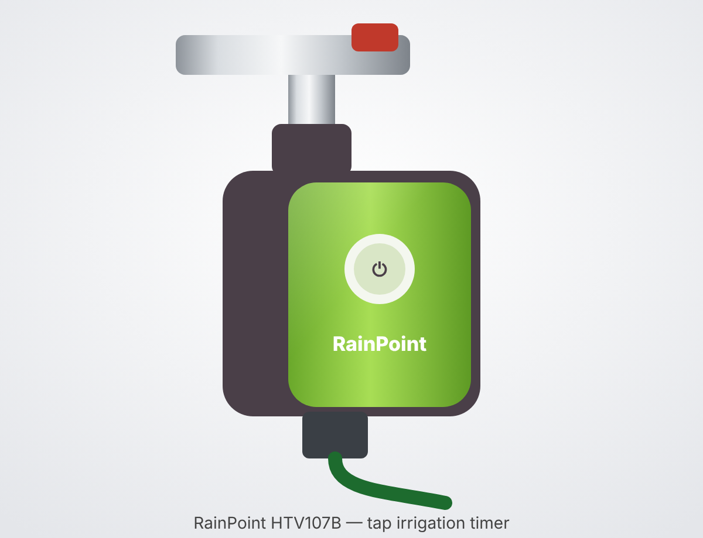
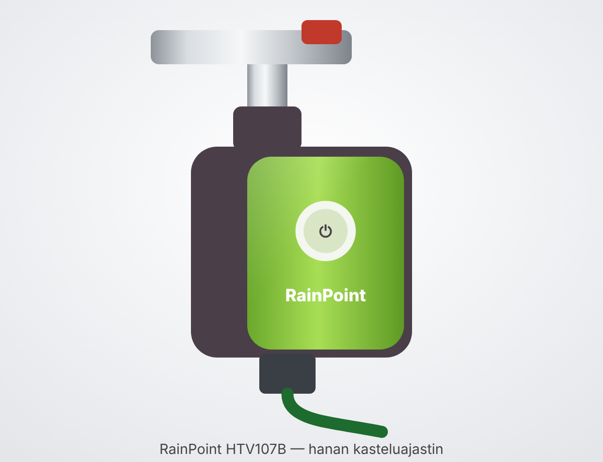

RainPoint HTV107B — таймер полива на кран (1 зона)
📍 где: Склад › Аксессуары для сада и теплицы — полив, Gardena015
Таймер полива RainPoint HTV107B, 1 зона
Кратко
• Таймер ставится на уличный кран и по расписанию открывает/закрывает воду для шланга или капельной системы.
• Сам таймер связан по Bluetooth 5.0; Wi-Fi и управление из приложения — только через хаб HWG009WB (в этот комплект не входит, покупается отдельно; в инструкции хаб описан вместе с таймером).
• Приложение — RainPoint Home. Поддержка голосовых ассистентов Google Assistant и Amazon Alexa.
• До 6 программ полива, режимы: обычный, интервальный, Cycle&Soak.
Комплект
• Таймер HTV107B (вариант «только таймер»).
• Входной фильтр (в инструкции указан как часть таймера).
• Инструкция.
• Хаб HWG009WB — отдельно; батарейки 4×AA — не входят.
Устройство, кнопка и индикаторы
• Кнопка таймера — короткое нажатие открывает/закрывает клапан (слышен щелчок); удержание — режим сопряжения/сброс.
• Светодиодный индикатор (белый/красный/синий).
• Батарейный отсек — 4×AA.
• Вход с фильтром: резьба 1" или 3/4"; выход: резьба 3/4".
• Включение: белый и красный горят вместе 1 с.
• Самотест/сопряжение: красный 2 с → красный+синий 1 с → красный быстро мигает (ждёт сопряжения); синий горит 2 с — сопряжено.
• Обычный полив: белый вспыхивает 1 раз в 4 с.
• Интервальный режим: белый вспыхивает 2 раза в 4 с.
• Есть программа, но время не синхронизировано: красный вспыхивает 1 раз в 4 с.
• Батарейки садятся: красный вспыхивает 1 раз в 3 с.
Питание и батарейки
• 4 щелочные батарейки AA (не входят в комплект). Солнечной панели и адаптера нет.
• Как открыть отсек — по инструкции не указано; сказано лишь вставить батарейки по полярности и надёжно закрыть отсек.
• Только щелочные, не смешивать старые с новыми и разные типы.
• Разряженные сразу вынимать; на время хранения батарейки извлекать.
Хаб HWG009WB (Wi-Fi)
• Включается в розетку в помещении, рядом с роутером и в пределах досягаемости таймера.
• Только Wi-Fi 2.4 ГГц (5 ГГц не поддерживается).
• Связь хаб–таймер по Bluetooth: до 60 м на открытом месте; стены, металлические ворота, кусты сокращают дальность.
• Режим сопряжения: удерживать кнопку хаба 5 с, пока синий не замигает быстро (2 раза/с).
• Индикатор: быстрое синее мигание — Smart-сопряжение; быстрое, затем медленное — AP-режим.
• Сброс хаба: вынуть из розетки, подождать 10 с, включить и сопрячь заново.
• Сколько таймеров тянет один хаб — по инструкции не указано.
Подключение к приложению
• Установите RainPoint Home, зарегистрируйтесь.
• Сначала добавьте хаб HWG009WB: включите его, удерживайте кнопку 5 с до быстрого синего мигания, выберите сеть 2.4 ГГц и введите пароль.
• Затем на странице хаба добавьте таймер HTV107B: вставьте батарейки, удерживайте кнопку таймера, пока красный не замигает быстро.
• При успехе синий индикатор таймера горит 2 с.
• При настройке держите таймер рядом с хабом и роутером.
Установка на кран
• Закройте кран, обмотайте резьбу крана тефлоновой лентой.
• Вставьте фильтр во вход таймера горизонтально (плоско) — иначе будет течь.
• Накрутите таймер строго вертикально (чтобы дождевая вода не затекала внутрь) — только рукой, без инструментов, не перекосив резьбу.
• Обмотайте лентой выходную резьбу и подсоедините шланг.
• Проверка при закрытом кране: нажмите кнопку — щелчок, клапан открыт; ещё раз — закрыт.
• Затем приоткройте кран и убедитесь, что вода идёт и перекрывается.
• После программирования откройте кран полностью — таймер управляет водой сам.
Программы полива в приложении
• Экран «Plan» → «+» → выбрать режим.
• Normal (обычный): время старта, длительность, периодичность, дата начала действия.
• Interval (интервальный, для туманообразования/порционного полива): время работы клапана, пауза, время старта, общая длительность, периодичность, дата начала.
• Cycle&Soak (полив–впитывание): длительность цикла и впитывания, общая длительность, периодичность, дата начала.
• Периодичность: каждый день, нечётные/чётные числа, через N дней, выбранные дни.
• Сохранить — в правом верхнем углу; удалить — в деталях программы.
• До 6 программ; длительность полива от 1 минуты до 12 часов.
• Сезонная корректировка (Seasonal Adjustment): по месяцам 10–200 % от заданного времени.
• Параметры интервала и длительность ручного полива по умолчанию — в «Basic Settings».
Ручной полив, дождь, сценарии
• Ручной полив: на главной «Manual» → режим и длительность; или кнопкой на таймере.
• Если во время ручного полива наступает время программы — запуск программы пропускается.
• Rain Delay (пропуск): на экране «Plan» — 24, 48 или 72 часа; затем полив продолжится по следующей программе. Отключается там же.
• Сценарии (вкладка «Smart»): условие + действие. Пример: если в вашем городе сильный дождь → «All Plans Delayed» на N дней. Город указывайте точно — погода берётся по нему.
• Уведомления («Me» → «Event»): онлайн/офлайн, журнал поливов, предупреждение о жаре.
• Работают ли программы без связи с хабом — по инструкции не указано (есть индикация «время не синхронизировано»).
Сброс таймера
• Выньте батарейки, подождите 10 с, вставьте обратно.
• Удерживайте кнопку, пока индикатор не замигает быстро (2 раза/с), и сопрягите заново.
Неисправности
• Клапан не открывается/не закрывается → замените батарейки; промойте входной фильтр; при плохой связи подождите и повторите.
• Таймер не подключается → проверьте Wi-Fi; поднесите таймер к хабу; удерживайте кнопку до быстрого красного мигания или удалите и добавьте заново.
• Хаб не подключается → сеть должна быть 2.4 ГГц; проверьте пароль; включите режим сопряжения (быстрое синее мигание).
• Программа не сработала → фильтр засорён; включён Rain Delay; задан сценарий «стоп при дожде»; батарейки сели (режим защиты); не заданы параметры программы.
• Течёт на входе → нет фильтра или он стоит не горизонтально; кран не 3/4"; добавьте тефлоновую ленту.
• Слабый напор → промойте/замените фильтр; проверьте, не перекошена ли резьба; при низком давлении в сети — повысительный насос.
Уход и зимнее хранение
• Только холодная вода, только на улице; под навесом служит дольше.
• Таймер всегда вертикально, фильтр держать чистым.
• Рабочая температура 3–50 °C; при угрозе заморозков снять, слить воду, вынуть батарейки и хранить в помещении.
• Не погружать в воду.
Технические характеристики
• Вход: резьба 1" или 3/4"; выход: 3/4".
• Рабочее давление: 0,5–8 бар.
• Длительность полива: 1 мин – 12 ч; до 6 программ.
• Режимы: Normal, Interval, Cycle&Soak.
• Связь: Bluetooth 5.0 до 60 м; Wi-Fi 2.4 ГГц через хаб HWG009WB.
• Защита: IP54; рабочая температура 3–50 °C.
• Питание: 4×AA щелочные.
• Гарантия: 1 год; для активации — письмо на service@rainpointonline.com с номером заказа.
Пересказ официальной инструкции для домашнего справочника. Источник: https://cdn.shopify.com/s/files/1/0612/6292/1970/files/HTV107B_009_-_Instruction_Manual_c444b421-0ac6-478a-8d7d-3c08216284fc.pdf (официальная инструкция HTV107B+HWG009WB); https://service.rainpointonline.com/hc/en-us/articles/17475152841359
RainPoint HTV107B — tap watering timer (1 zone)
1-zone tap water timer, Wi-Fi via the HWG009WB hub · 📍 Where: Open box 015

Summary
• The timer is fitted to an outdoor tap and opens/closes the water for a hose or drip system on a schedule.
• The timer itself communicates via Bluetooth 5.0; Wi-Fi and app control only work through the HWG009WB hub (not included in this kit, sold separately; the manual describes the hub together with the timer).
• The app is RainPoint Home. Works with the Google Assistant and Amazon Alexa voice assistants.
• Up to 6 watering programs; modes: normal, interval, Cycle&Soak.
In the box
• HTV107B timer (“timer only” version).
• Inlet filter (listed in the manual as part of the timer).
• Instruction manual.
• HWG009WB hub — sold separately; 4×AA batteries — not included.
Parts, button and indicators
• Timer button — a short press opens/closes the valve (you hear a click); press and hold — pairing mode/reset.
• LED indicator (white/red/blue).
• Battery compartment — 4×AA.
• Inlet with filter: 1" or 3/4" thread; outlet: 3/4" thread.
• Power on: white and red light together for 1 s.
• Self-test/pairing: red 2 s → red+blue 1 s → red flashes rapidly (waiting for pairing); blue on for 2 s — paired.
• Normal watering: white flashes once every 4 s.
• Interval mode: white flashes twice every 4 s.
• A program is set but the time is not synchronised: red flashes once every 4 s.
• Batteries low: red flashes once every 3 s.
Power and batteries
• 4 alkaline AA batteries (not included). There is no solar panel or adapter.
• How to open the compartment is not stated in the manual; it only says to insert the batteries observing polarity and close the compartment securely.
• Alkaline only; do not mix old and new batteries or different types.
• Remove flat batteries immediately; take the batteries out for storage.
HWG009WB hub (Wi-Fi)
• Plugs into an indoor socket, close to the router and within range of the timer.
• 2.4 GHz Wi-Fi only (5 GHz is not supported).
• Hub–timer link via Bluetooth: up to 60 m in open space; walls, metal gates and bushes reduce the range.
• Pairing mode: hold the hub button for 5 s until the blue light flashes rapidly (2 times/s).
• Indicator: rapid blue flashing — Smart pairing; rapid, then slow — AP mode.
• Hub reset: unplug it, wait 10 s, plug it back in and pair again.
• How many timers one hub can handle is not stated in the manual.
Connecting to the app
• Install RainPoint Home and register.
• First add the HWG009WB hub: plug it in, hold the button for 5 s until the blue light flashes rapidly, choose the 2.4 GHz network and enter the password.
• Then on the hub's page add the HTV107B timer: insert the batteries and hold the timer button until the red light flashes rapidly.
• When successful, the timer's blue indicator lights for 2 s.
• Keep the timer close to the hub and router during setup.
Fitting to the tap
• Close the tap and wrap the tap thread with PTFE (Teflon) tape.
• Insert the filter into the timer inlet horizontally (flat) — otherwise it will leak.
• Screw the timer on strictly vertically (so rainwater cannot get inside) — by hand only, without tools, without cross-threading.
• Wrap the outlet thread with tape and connect the hose.
• Test with the tap closed: press the button — click, the valve is open; press again — closed.
• Then open the tap slightly and check that the water flows and shuts off.
• After programming, open the tap fully — the timer controls the water by itself.
Watering programs in the app
• “Plan” screen → “+” → choose the mode.
• Normal: start time, duration, frequency, start date.
• Interval (for misting/watering in portions): valve run time, pause, start time, total duration, frequency, start date.
• Cycle&Soak (water–soak): cycle and soak durations, total duration, frequency, start date.
• Frequency: every day, odd/even dates, every N days, selected days.
• Save — top right corner; delete — in the program details.
• Up to 6 programs; watering duration from 1 minute to 12 hours.
• Seasonal Adjustment: per month, 10–200 % of the set time.
• Interval parameters and the default manual watering duration are in “Basic Settings”.
Manual watering, rain, scenes
• Manual watering: on the home screen “Manual” → mode and duration; or with the button on the timer.
• If a program's start time comes during manual watering, that program run is skipped.
• Rain Delay (skip): on the “Plan” screen — 24, 48 or 72 hours; after that watering continues with the next program. It is switched off in the same place.
• Scenes (“Smart” tab): condition + action. Example: if there is heavy rain in your city → “All Plans Delayed” for N days. Enter your city precisely — the weather is taken for it.
• Notifications (“Me” → “Event”): online/offline, watering log, heat warning.
• Whether programs run without a connection to the hub is not stated in the manual (there is a “time not synchronised” indication).
Resetting the timer
• Remove the batteries, wait 10 s and put them back.
• Hold the button until the indicator flashes rapidly (2 times/s) and pair again.
Troubleshooting
• Valve does not open/close → replace the batteries; rinse the inlet filter; if the connection is poor, wait and try again.
• Timer will not connect → check the Wi-Fi; bring the timer closer to the hub; hold the button until the red light flashes rapidly, or delete it and add it again.
• Hub will not connect → the network must be 2.4 GHz; check the password; enable pairing mode (rapid blue flashing).
• Program did not run → clogged filter; Rain Delay is on; a “stop when raining” scene is set; batteries are flat (protection mode); program parameters are not set.
• Leak at the inlet → filter missing or not lying flat; tap is not 3/4"; add PTFE tape.
• Low water pressure → rinse/replace the filter; check that the thread is not crossed; if the mains pressure is low — a booster pump.
Care and winter storage
• Cold water only, outdoors only; it lasts longer under a canopy.
• Always keep the timer vertical and the filter clean.
• Operating temperature 3–50 °C; if there is a risk of frost, remove it, drain the water, take out the batteries and store it indoors.
• Do not immerse in water.
Specifications
• Inlet: 1" or 3/4" thread; outlet: 3/4".
• Operating pressure: 0.5–8 bar.
• Watering duration: 1 min – 12 h; up to 6 programs.
• Modes: Normal, Interval, Cycle&Soak.
• Connectivity: Bluetooth 5.0 up to 60 m; 2.4 GHz Wi-Fi via the HWG009WB hub.
• Protection: IP54; operating temperature 3–50 °C.
• Power: 4×AA alkaline.
• Warranty: 1 year; to activate it, email service@rainpointonline.com with your order number.
Summary of the official manual for the home reference. Source: https://cdn.shopify.com/s/files/1/0612/6292/1970/files/HTV107B_009_-_Instruction_Manual_c444b421-0ac6-478a-8d7d-3c08216284fc.pdf (official HTV107B+HWG009WB manual); https://service.rainpointonline.com/hc/en-us/articles/17475152841359
Yhden vyöhykkeen kasteluajastin hanaan, Wi-Fi HWG009WB-keskittimen kautta · 📍 Missä: Avaa laatikko 015

Lyhyesti
• Ajastin kiinnitetään ulkohanaan, ja se avaa ja sulkee veden letkuun tai tippukastelujärjestelmään aikataulun mukaan.
• Ajastin itse on yhteydessä Bluetooth 5.0:lla; Wi-Fi ja sovellusohjaus toimivat vain HWG009WB-keskittimen kautta (ei sisälly tähän pakkaukseen, ostetaan erikseen; käyttöohjeessa keskitin on kuvattu ajastimen kanssa).
• Sovellus on RainPoint Home. Tukee Google Assistant- ja Amazon Alexa -ääniavustajia.
• Enintään 6 kasteluohjelmaa; tilat: normaali, jaksottainen (interval) ja Cycle&Soak.
Pakkauksen sisältö
• HTV107B-ajastin (”vain ajastin” -versio).
• Tulosuodatin (käyttöohjeessa mainittu osana ajastinta).
• Käyttöohje.
• HWG009WB-keskitin — erikseen; paristot 4×AA — eivät sisälly.
Rakenne, painike ja merkkivalot
• Ajastimen painike — lyhyt painallus avaa/sulkee venttiilin (kuuluu naksahdus); pitkä painallus — paritustila/nollaus.
• LED-merkkivalo (valkoinen/punainen/sininen).
• Paristokotelo — 4×AA.
• Tuloliitäntä suodattimella: kierre 1" tai 3/4"; lähtö: kierre 3/4".
• Virta päälle: valkoinen ja punainen palavat yhdessä 1 s.
• Itsetesti/paritus: punainen 2 s → punainen+sininen 1 s → punainen vilkkuu nopeasti (odottaa paritusta); sininen palaa 2 s — paritettu.
• Normaali kastelu: valkoinen välähtää kerran 4 s välein.
• Jaksottainen tila: valkoinen välähtää kahdesti 4 s välein.
• Ohjelma on asetettu, mutta aikaa ei ole synkronoitu: punainen välähtää kerran 4 s välein.
• Paristot heikkenevät: punainen välähtää kerran 3 s välein.
Virta ja paristot
• 4 alkaliparistoa AA (eivät sisälly pakkaukseen). Aurinkopaneelia tai verkkolaitetta ei ole.
• Kotelon avaamista ei ole kuvattu käyttöohjeessa; siinä sanotaan vain, että paristot asetetaan napaisuuden mukaan ja kotelo suljetaan tiiviisti.
• Vain alkaliparistoja; älä sekoita vanhoja ja uusia paristoja tai eri tyyppejä.
• Poista tyhjät paristot heti; ota paristot pois säilytyksen ajaksi.
HWG009WB-keskitin (Wi-Fi)
• Kytketään sisätiloissa pistorasiaan reitittimen lähelle ja ajastimen kantaman sisälle.
• Vain 2,4 GHz:n Wi-Fi (5 GHz ei ole tuettu).
• Keskittimen ja ajastimen välinen yhteys Bluetoothilla: enintään 60 m avoimessa tilassa; seinät, metalliportit ja pensaat lyhentävät kantamaa.
• Paritustila: pidä keskittimen painiketta 5 s, kunnes sininen valo vilkkuu nopeasti (2 kertaa/s).
• Merkkivalo: nopea sininen vilkkuminen — Smart-paritus; ensin nopea, sitten hidas — AP-tila.
• Keskittimen nollaus: irrota pistorasiasta, odota 10 s, kytke takaisin ja parita uudelleen.
• Kuinka monta ajastinta yksi keskitin tukee, ei ole kerrottu käyttöohjeessa.
Yhdistäminen sovellukseen
• Asenna RainPoint Home ja rekisteröidy.
• Lisää ensin HWG009WB-keskitin: kytke se päälle, pidä painiketta 5 s, kunnes sininen valo vilkkuu nopeasti, valitse 2,4 GHz:n verkko ja anna salasana.
• Lisää sitten keskittimen sivulla HTV107B-ajastin: aseta paristot ja pidä ajastimen painiketta, kunnes punainen valo vilkkuu nopeasti.
• Kun yhdistäminen onnistuu, ajastimen sininen merkkivalo palaa 2 s.
• Pidä ajastin asetusten ajan lähellä keskitintä ja reititintä.
Asennus hanaan
• Sulje hana ja kierrä hanan kierteeseen teflonnauhaa.
• Aseta suodatin ajastimen tuloliitäntään vaakasuoraan (tasaisesti) — muuten liitos vuotaa.
• Kierrä ajastin paikalleen täsmälleen pystyasentoon (jotta sadevesi ei pääse sisään) — vain käsin, ilman työkaluja ja kierteitä vinoon kiertämättä.
• Kierrä lähtökierteeseen teflonnauhaa ja liitä letku.
• Testaa hana suljettuna: paina painiketta — naksahdus, venttiili on auki; paina uudelleen — kiinni.
• Avaa sitten hanaa hieman ja varmista, että vesi tulee ja katkeaa.
• Ohjelmoinnin jälkeen avaa hana kokonaan — ajastin ohjaa vettä itse.
Kasteluohjelmat sovelluksessa
• ”Plan”-näkymä → ”+” → valitse tila.
• Normal (normaali): aloitusaika, kesto, toistuvuus, voimassaolon alkupäivä.
• Interval (jaksottainen, sumutukseen/annoskasteluun): venttiilin aukioloaika, tauko, aloitusaika, kokonaiskesto, toistuvuus, alkupäivä.
• Cycle&Soak (kastelu–imeytys): kastelujakson ja imeytyksen kesto, kokonaiskesto, toistuvuus, alkupäivä.
• Toistuvuus: joka päivä, parittomat/parilliset päivät, N päivän välein, valitut päivät.
• Tallenna — oikeassa yläkulmassa; poista — ohjelman tiedoissa.
• Enintään 6 ohjelmaa; kastelun kesto 1 minuutista 12 tuntiin.
• Kausisäätö (Seasonal Adjustment): kuukausittain 10–200 % asetetusta ajasta.
• Jaksottaisen tilan parametrit ja käsikastelun oletuskesto — kohdassa ”Basic Settings”.
Käsikastelu, sade, skenaariot
• Käsikastelu: aloitusnäkymässä ”Manual” → tila ja kesto; tai ajastimen painikkeella.
• Jos ohjelman aloitusaika osuu käsikastelun ajalle, ohjelman käynnistys ohitetaan.
• Rain Delay (ohitus): ”Plan”-näkymässä — 24, 48 tai 72 tuntia; sen jälkeen kastelu jatkuu seuraavan ohjelman mukaan. Poistetaan käytöstä samasta paikasta.
• Skenaariot (”Smart”-välilehti): ehto + toiminto. Esimerkki: jos kaupungissasi sataa rankasti → ”All Plans Delayed” N päiväksi. Anna kaupunki tarkasti — sää haetaan sen mukaan.
• Ilmoitukset (”Me” → ”Event”): online/offline, kasteluloki, hellevaroitus.
• Toimivatko ohjelmat ilman yhteyttä keskittimeen, ei ole kerrottu käyttöohjeessa (merkkivalossa on ilmaisu ”aikaa ei ole synkronoitu”).
Ajastimen nollaus
• Poista paristot, odota 10 s ja aseta ne takaisin.
• Pidä painiketta, kunnes merkkivalo vilkkuu nopeasti (2 kertaa/s), ja parita uudelleen.
Vianetsintä
• Venttiili ei aukea/sulkeudu → vaihda paristot; huuhtele tulosuodatin; jos yhteys on heikko, odota ja yritä uudelleen.
• Ajastin ei yhdisty → tarkista Wi-Fi; tuo ajastin lähemmäs keskitintä; pidä painiketta, kunnes punainen valo vilkkuu nopeasti, tai poista laite ja lisää se uudelleen.
• Keskitin ei yhdisty → verkon on oltava 2,4 GHz; tarkista salasana; kytke paritustila päälle (nopea sininen vilkkuminen).
• Ohjelma ei käynnistynyt → suodatin tukossa; Rain Delay päällä; asetettu ”pysäytä sateella” -skenaario; paristot tyhjät (suojatila); ohjelman parametreja ei ole asetettu.
• Tuloliitäntä vuotaa → suodatin puuttuu tai ei ole vaakasuorassa; hana ei ole 3/4"; lisää teflonnauhaa.
• Heikko vedenpaine → huuhtele/vaihda suodatin; tarkista, ettei kierre ole mennyt vinoon; jos verkoston paine on matala — paineenkorotuspumppu.
Hoito ja talvisäilytys
• Vain kylmää vettä, vain ulkokäyttöön; katoksen alla kestää pidempään.
• Pidä ajastin aina pystyasennossa ja suodatin puhtaana.
• Käyttölämpötila 3–50 °C; kun pakkasia on odotettavissa, irrota ajastin, tyhjennä vesi, poista paristot ja säilytä sisätiloissa.
• Älä upota veteen.
Tekniset tiedot
• Tulo: kierre 1" tai 3/4"; lähtö: 3/4".
• Käyttöpaine: 0,5–8 bar.
• Kastelun kesto: 1 min – 12 h; enintään 6 ohjelmaa.
• Tilat: Normal, Interval, Cycle&Soak.
• Yhteydet: Bluetooth 5.0 enintään 60 m; 2,4 GHz:n Wi-Fi HWG009WB-keskittimen kautta.
• Suojaus: IP54; käyttölämpötila 3–50 °C.
• Virta: 4×AA alkaliparistot.
• Takuu: 1 vuosi; aktivoi lähettämällä sähköpostia osoitteeseen service@rainpointonline.com ja ilmoittamalla tilausnumero.